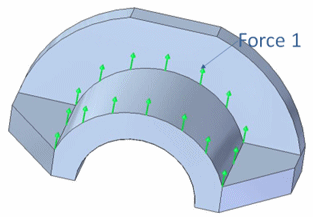
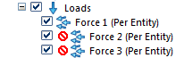

Modify and reuse analysis studies
There are many ways you can modify an existing finite element analysis study. The basic process is to double-click a load, constraint, connector, or other object in the Simulation pane to edit the inputs that created it. You also can modify the inputs used to define the study using the Modify Study shortcut command in the Simulation pane. This opens the Modify Study dialog box.
Some of the specific changes you may want to make are listed below.
Modifying a Teamcenter-managed model
In the Teamcenter-managed environment, the Solid Edge Simulation analysis file (.ssd) is saved in Teamcenter in Named References. To download the file from Teamcenter, use the Simulation tab→Teamcenter group→Download .ssd command.
Selecting a study to modify
Existing studies are displayed in the Simulation pane. You can:
-
Identify the status of analysis processing steps. See Reviewing the study status to learn how to interpret the study status icons
 .
. -
Tip:
See also Using the Simulation pane to locate, review, and modify study definitions.
-
Review the analysis results for a selected study. If a study has been solved, you can open the study in the Simulation Results environment using the View command on the Results node shortcut menu, or the Results command on the ribbon.
Changing study type
You can right-click a study name and select the Modify Study command to change the study type in the Modify Study dialog box.
When you change the study type, the loads and constraints are retained, providing they are valid boundary conditions for the new study type you select. Assembly connectors are updated automatically, if applicable. This capability lets you modify any input to the study, without having to create a new study and then copy the loads and constraints to it.
After changing the study type, you can set other study options in the dialog box based on the study type you selected.
Modifying and reusing study definitions
You can modify and reuse a study by doing any of the following:
-
Edit the study processing parameters in the Modify Study dialog box to add keywords or specify additional result types to extract.
Modifying loads
You can modify a load by doing any of the following:
-
Double-clicking the load name in the Simulation pane, or selecting the load edit definition handle in the graphics window.
Example:An edit definition handle looks like this:

-
Change the load magnitude or direction using the steering wheel or the Flip button on the Loads command bar.
-
Right-click the Loads group in the Simulation pane, and then use shortcut commands to create a new load.
-
Suppress individual loads to compare results. You can use the Suppress command and the Unsuppress command on the shortcut menu of both loads and constraints.
Example:
Modifying constraints
You can manage constraints from the Simulation pane. For example, you can:
-
Right-click the Constraints group in the Simulation pane, and then use shortcut commands to create a new constraint.
Modifying a mesh
Initial meshing using the Mesh command will mesh the model based upon a subjective mesh size. Many times this will be a very good initial guess. If you mesh the part and are unhappy with the mesh generated, remesh using a different subjective size, or refine the mesh using a mesh control called sizing.
-
Mesh sizing—Use one of the Size commands to apply sizing to bodies, faces, and edges.
-
Change material (mesh) thickness for a sheet metal part.
-
Modify mesh sizing—Use the Edit Definition command on a mesh size shortcut menu to change mesh sizing on an edge, face, or body. This causes the mesh to go out of date. You must then regenerate the mesh using the Mesh & Solve button in the Mesh dialog box.
-
Display the mesh.
-
You can display an existing mesh by selecting the Mesh command from the ribbon or from the Mesh shortcut menu on the Simulation pane.
-
You can highlight or select a mesh sizing entry in the Simulation pane and review the associated model geometry.
Note:You can change the colors used to highlight and select the geometry using the Highlight and Selected options on the Colors page (Solid Edge Options dialog box).
-
-
Use the Geometry Inspector to remove geometry flaws and small entities that produce meshing errors.
Modifying assembly connectors
-
Change connector region direction—Use the Edit Region Directions command to change the direction of glue or no penetration contact connectors.
Tip:In a correctly defined assembly connector, the connector direction of the faces and surfaces in the target region, and the connector direction of the faces and surfaces in the source region should point toward each other.
Changing text size
You can change the size of text displayed in the graphics window to make it easier to read. For example, the text size of load, constraint, and assembly connector edit definition handles may need to be made larger so they are visible on the model.
You can:
-
Change element size interactively
-
Automatically scale elements
-
Change the size of new elements by editing the style
To learn more, see Change PMI text size.
Modifying FEA symbol properties
You can change the size, spacing, and color of load, constraint, and assembly connector symbols.
-
Modify symbol size and spacing
-
Modify symbol and value label color
To learn more, see Modify FEA symbol properties.
How do I
Analyze a modelReplace target and source connection regions
Change connector region direction
Review analysis results
Rename a study
Change PMI text size
Look up more details
Loads command barMesh dialog box
Quick links
Using the Simulation paneReviewing the study status
Creating and using loads
Creating and using constraints